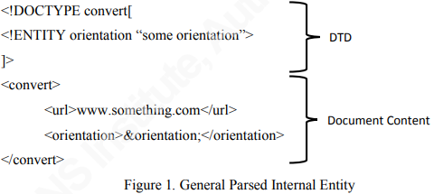

XML External Entity Attack
What it is:
Attack on a weakly configured XML parser containing a reference to an external entity. One of the most common ways of finding an XXE is to abuse a file upload function. Note that exploiting an XXE isn’t limited to injecting content into an XML file. There are many other extensions that use XML formatting such as docx, pptx, gpx, pdf and xml itself.
Potential impacts:
Disclosure of confidential information
DOS on parsing system
Unauthorized acces to system/data
Potential pivot access to internal systems
Why it happens:
Extensible Markup Language (XML) is a feature rich and widely used information exchange format and standard. The standard allows for defining the structure of the XML using a Document Type Declaration, or DTD. The DTD provides a mechanism for defining entities whose values can be substituted into the XML document contents. This is helpful when the entity value is used multiple times.
The XML in Figure 1 contains a DTD with an entity called “orientation” defined. The value of the “orientation” entity is set to “some orientation.” Following the DTD are the XML elements which contain a “url” tag and an “orientation” tag. The value of the “orientation” element is “&orientation;” which is the name of the entity with an ampersand (&) symbol before and a semi-colon (;) after. This instructs the XML parser to replace “&orientation;” with the entity value defined in the DTD, namely “some orientation.”

The XML parser will deliver the XML shown in Figure 2 after parsing of the general parsed internal entity. Notice that the DTD has been removed and that the orientation element has a value of “some orientation” as was defined in the DTD.

In addition to internal entities, there are external entities. External entities reference something outside of the parser itself in order to determine the value of the entity. One type of external entity is declared by using the “SYSTEM” keyword and passing a URI from which to fetch the value.

In the end, ENTITY creation and execution occur due to XML parsing libraries and the lack of filtering and validation on XML data.
So if an application receives XML to the server the attacker might be able to exploit an XXE. It could be sent as a GET, but it is more likely that it is send in a POST. It can also be done through ftp:// or http(s)://
An attack might look like this:
<?xml version="1.0" encoding="ISO-8859-1"?>
<!DOCTYPE foo [
<!ELEMENT foo ANY >
<!ENTITY xxe SYSTEM "file:///etc/passwd" >]><foo>&xxe;</foo>
The elemet can be whatever, it doesn't matter. The xxe is the "variable" where the content of /dev/random get stored. And by dereferencing it in the foo-tag the content gets outputted.This way an attacker might be able to read files from the local system, like boot.ini or passwd. SYSTEM means that what is to be included can be found locally on the filesystem.
In php-applications where the expect module is loaded it is possible to get RCE. It is not a very common vulnerability, but still good to know.
<?xml version="1.0" encoding="ISO-8859-1"?>
<!DOCTYPE foo [ <!ELEMENT foo ANY >
<!ENTITY xxe SYSTEM "expect://id" >]>
<creds>
<user>&xxe;</user>
<pass>mypass</pass>
</creds>
Even if the data is not reflected backto the website it is still possible to exfiltrate files and data from the server. The technique is similar to how you exfiltrate the cookie in a Cross-Site Scripting attack, you send it in the url.